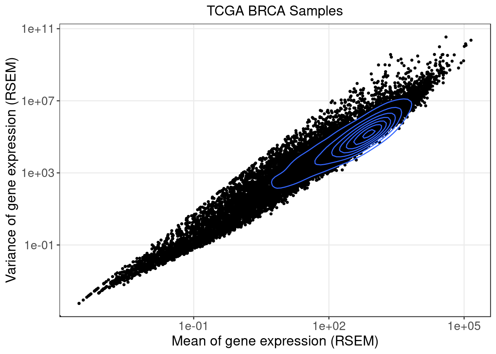
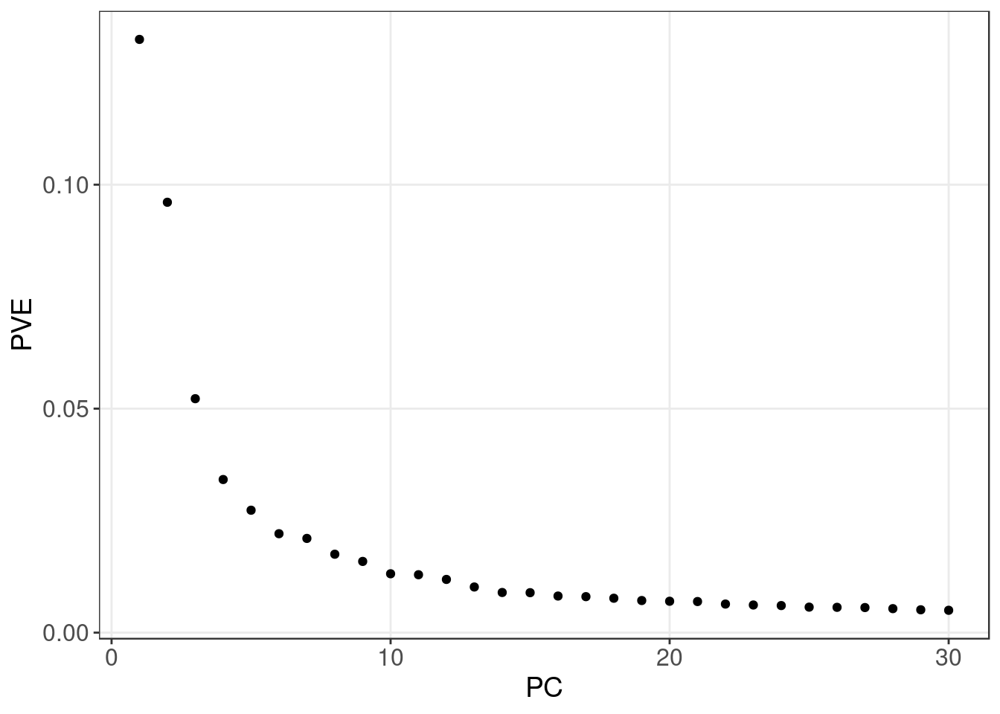
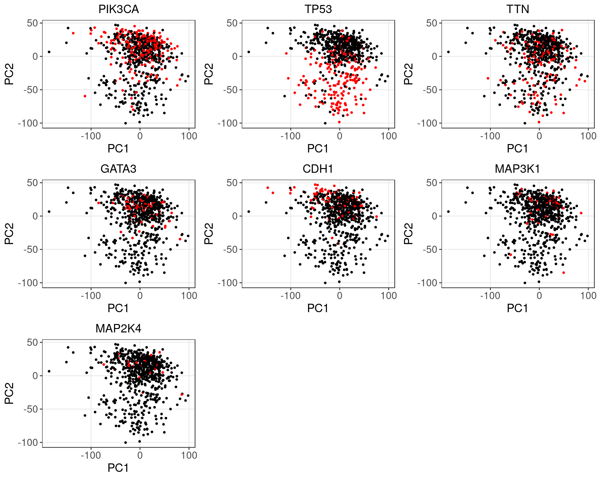
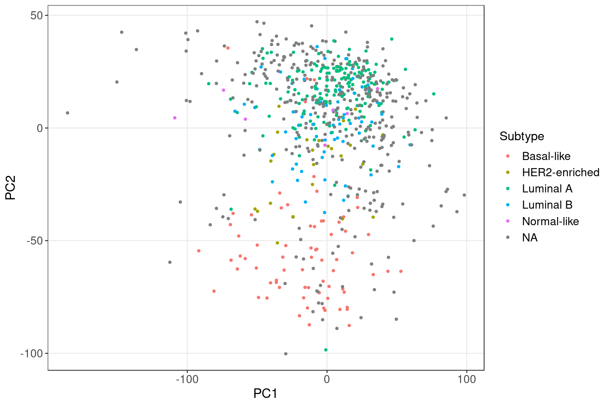

References: Perspective on Oncogenic Processes at the End of the Beginning of Cancer Genomics.
Data source:
FireBrowse TCGA BRCA Archives.
Perturbations:
Somatic mutation status of selected frequently mutated driver genes (PIK3CA, TP53, TTN, GATA3, CDH1, MAP3K1, MAP2K4).
Samples:
TCGA breast invasive carcinoma (BRCA) tumor samples.
To avoid possible confounding due to gender and race, we confined our study samples to be only from female Caucasian subjects.
In addition, only samples with somatic mutation annotation were kept, resulted in 700 samples.

Only the top 10k most variable genes were kept.
Normalized RSEM data was log-transformed, and then corrected for subject age and tumor purity through linear regression.

We categorize the somatic mutations observed in our samples into the genes they are located in.
These are the top most frequently mutated genes in our samples:| Hugo_Symbol | n |
|---|---|
| PIK3CA | 238 |
| TP53 | 193 |
| TTN | 140 |
| CDH1 | 87 |
| MUC16 | 74 |
| GATA3 | 69 |
| MAP3K1 | 51 |
| MUC4 | 51 |
| CROCCP2 | 48 |
| MUC12 | 45 |
| KMT2C | 44 |
| SYNE1 | 44 |
| FLG | 41 |
| RYR2 | 41 |
| FCGBP | 40 |
| MUC5B | 38 |
| RYR3 | 36 |
| HMCN1 | 35 |
| OBSCN | 35 |
| NCOR1 | 33 |

Breast tumor subtype data were obtained from Comprehensive molecular portraits of human breast tumors.

| Mutation | PIK3CA | TP53 | TTN | GATA3 | CDH1 | MAP3K1 | MAP2K4 |
| Num_DE_genes | 4477 | 6853 | 638 | 1957 | 5558 | 1760 | 152 |